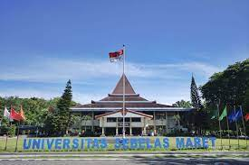

Universitas Sebelas Maret (UNS)
Universitas Sebelas Maret (UNS) adalah sebuah perguruan tinggi negeri di Indonesia yang berada di Kentingan, Jebres, Kota Surakarta. Universitas Sebelas Maret menyediakan berbagai program pendidikan mulai dari jenjang vokasi, sarjana, magister, dan doktoral.
Hingga kini, terdapat tiga belas fakultas dan dua sekolah yang berada di dalam lingkungan Universitas Sebelas Maret.
Sejarah
Pada tanggal 11 Maret 1976, dengan dibacanya Surat Keputusan Presiden Republik Indonesia tentang pembukaan Universitas Negeri Surakarta Sebelas Maret, maka universitas ini resmi berdiri sebagai perguruan tinggi negeri di Surakarta. Cikal bakal pendirian UNS dapat dirunut jejaknya sejak 1950-an.
Pada masa itu, Surakarta telah memiliki keinginan untuk mendirikan sebuah universitas negeri sendiri, mengingat kota lain telah memiliki universitas yang umurnya bahkan telah mencapai puluhan tahun. Namun, akibat perang, penyatuan pemerintahan, kekeruhan arus politik, ekonomi rakyat rusak, dan lain-lainnya, rencana pembangunan universitas negeri di Surakarta belum dapat diwujudkan.
Pada 1953, setelah semua kekacauan berakhir, timbul keinginan mewujudkan universitas itu kembali. Hal ini mengingat Surakarta sebagai pusat kebudayaan Jawa asli dan memiliki potensi yang besar di lapangan perguruan, baik tenaga pengajar dan siswanya. Panitia pendirian universitas pun dibentuk, dengan ketua Mohammad Saleh, Wali Kota Surakarta saat itu. Hanya saja, usaha ini gagal sebelum sempat dimulai. Penyebabnya adalah tidak adanya sumber keuangan baik dari pemerintah daerah dan pusat, timbulnya keinginan sementara golongan untuk mendirikan universitas swasta secara sendiri-sendiri, dan kurang mendapat simpati beberapa orang dari Universitas Gadjah Mada. Adanya hambatan dan pembangunan yang sedang dilakukan di Kota Surakarta membuat gagasan pendirian itu pun lenyap. Hal itu ditambah pula dengan kegaduhan politik antarpartai yang berebut kekuasaan di pemerintahan.
Sepuluh tahun kemudian, pada tahun 1963, didirikan Universitas Kota Praja Surakarta (UKPS). Universitas ini diinisiasi oleh pemerintah daerah kala itu, yang dipimpin oleh Utomo Ramelan. Pada masa ini pula, Partai Komunis tengah tumbuh dengan baik. Berbagai lini kehidupan juga terpengaruh keadaan itu. Begitu pula dengan UPKS, ilmu tentang sosialisme berkembang di dunia pendidikan universitas. Umur universitas ini juga tidak lama. Saat peristiwa G30S pecah di Indonesia, universitas ini pun akhirnya terkubur, karena semua hal yang berbau sosialisme/komunisme kemudian dilarang.
Gagasan pendirian universitas muncul lagi pada 11 Januari 1968, saat R. Kusnandar menjadi Wali Kota Kepala Daerah Kota Madya Surakarta. Ia pun membentuk panitia pendirian universitas. Hanya, seperti panitia yang terbentuk sebelumnya, panitia ini pun gagal. Latar belakang kegagalan ini juga masih sama dengan sebelumnya, yaitu pemerintah pusat waktu itu tidak dapat membiayai pendirian universitas negeri di Surakarta serta keuangan daerah Surakarta ketika itu juga tidak mampu untuk membiayainya.
Universitas Sebelas Maret awalnya merupakan gabungan dari 5 perguruan tinggi yang ada di Surakarta. Lima perguruan tinggi tersebut adalah Institut Pelatihan dan Pendidikan Guru Surakarta, Sekolah Menengah Olahraga Surakarta, Akademi Administrasi Bisnis Surakarta, Universitas Gabungan Surakarta (universitas ini adalah gabungan dari beberapa universitas di Surakarta termasuk Universitas Islam Indonesia Surakarta), dan Fakultas Obat-obatan Departemen Pertahanan dan Keamanan Pengembangan Pendidikan Tinggi Nasional Surakarta. Pengabungan beberapa perguruan tinggi tersebut, mempunyai satu tujuan yang besar, yakni meningkatkan kualitas pendidikan tinggi di Surakarta. Setelah 5 tahun melakukan konsolidasi, UNS mempersiapkan diri untuk memulai proses perkembangannya. Pembanguan secara fisik dimulai pada tahun 1980. Di bawah kepemimpinan dr. Prakosa, kampus yang semula terletak di di beberapa tempat disatukan dalam suatu kawasan. Lokasi tersebut adalah di daerah Kentingan, di tepi Sungai Bengawan Solo, dengan cakupan area sekitar 60 hektare. Di daerah Kentingan inilah, pembangunan kampus tahap pertama berakhir pada tahun 1985.